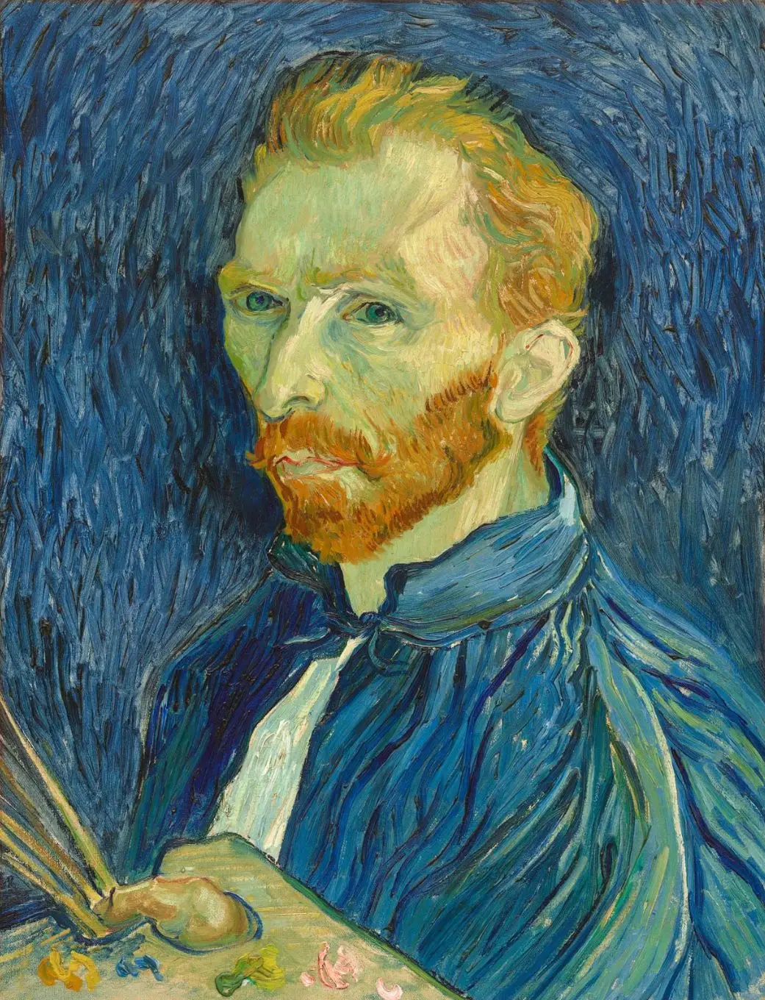

A Glimpse Into
My World

WELCOME!
My work has given me the chance to travel widely and experience different cultures. I hope these photos offer a glimpse into that journey. Then you can discover what shapes my life.
I’ll skip this for now...My Photos
These images hold a few of my favourite memories from the places I’ve visited and the people I’ve met along the way.
Tunis, Tunisia
On the Mediterranean coast of Tunis
Ghana
A remote place where even phones are a rarity
Abuja, Nigeria
Father with his daughter
Bangkok, Thailand
Bangkok, Grand Palace, Thailand
These photos represent a small but meaningful part of my life. My travels and five years living in Brussels have given me many more stories than I can share here.
My Priorities
These five priorities reflect what matters most to me and guide the choices I make.
1. Family
Without a doubt, my family has had the greatest influence on the person I have become. I am deeply grateful to my parents for their love, care and support, and to my sister, who has always been there for me. I feel especially fortunate to have my daughter in my life, and I am incredibly proud of her.
2. Friends
I value my friendships and make it a priority to stay connected, even when life gets busy.
3. Spiritual Journey
Faith has become an important part of my life, shaped by years of exploring different spiritual paths and finding my own understanding along the way.
4. Balance
I aim to maintain a balance between family, work, personal growth and personal interests. I enjoy my profession and the opportunities it gives me to learn and take on new challenges.
5. Continuous Growth
I prioritise continuous learning, developing new skills and using both successes and setbacks to improve personally and professionally.

If you hear a voice within you saying: 'you are no painter,' then paint by all means, lad, and that voice will be silenced, but only by working. Your friends can only be those who themselves struggle against it, who raise your activity by their own example of action.

Get in Touch - Let's have a chat
If anything on this website or any of the photos has caught your interest - or if you have a question - just drop me an email. I’d be happy to hear from you and will get back to you as soon as I can.
📧 Connect via E-mail